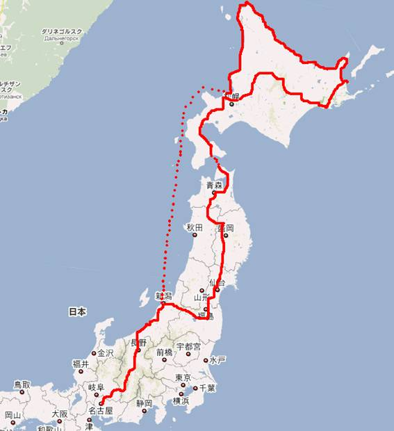
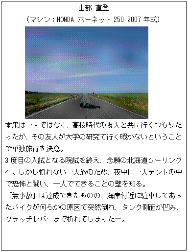

全行程
東名名古屋IC→(東名高速)→(中央自動車道)→(長野自動車道)→(上信越自動車道)→(北陸自動車道)→(磐越自動車道)→(東北自動車道)→青森東IC→恐山→函館→羊蹄山→小樽→(札樽自動車道)→(道央自動車道)→旭川鷹栖IC→層雲峡→足寄→釧路→標津(⇔野付半島)→羅臼→ウトロ→網走→紋別→宗谷岬→ノシャップ岬→サロベツ原野→留萌→小樽→(新日本海フェリー)→新潟→名古屋

旅行者紹介(単独行)

目次